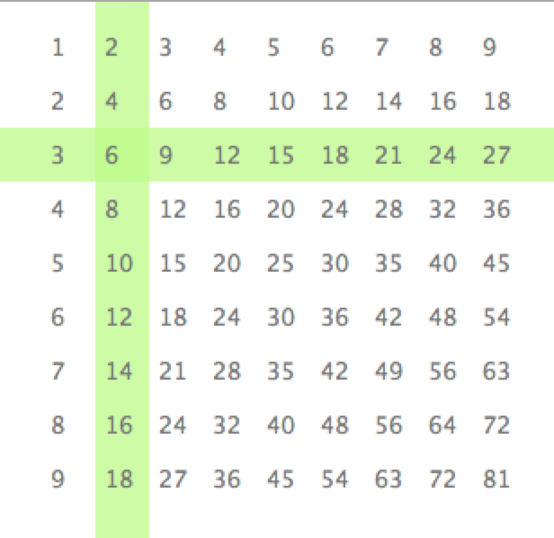
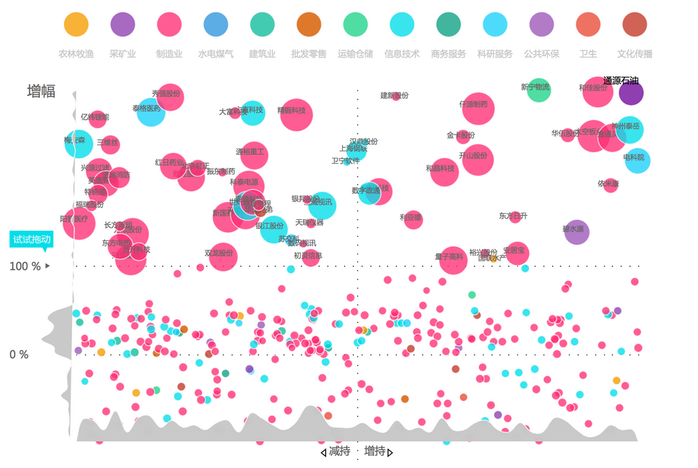
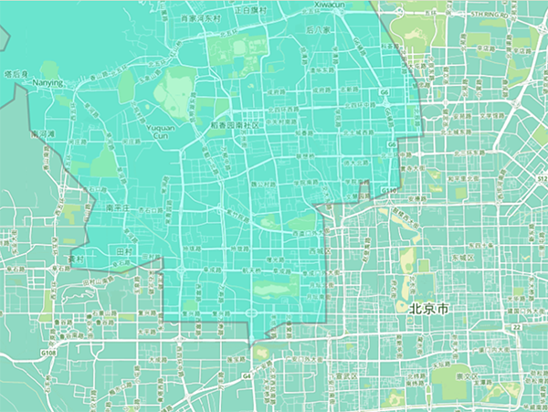

时间地点
2013.07.21 车库咖啡 09:00AM
课前准备
- 图表部分
- 复习二维Array (e.g. int[][] 2DArray)
- 复习class{}的使用，理解OOP
- 复习速度、加速度、路程等这些用程序控制运动的方法（不用Vector)
- 地图部分
- 前往Mapbox和Cloudmade注册帐号
- 下载Unfoldingmap和Google Mapper这两个Java/Processing的Library
- 在自己的电脑上安装好Processing1.5和Processing2.x
预习案例
案例1. 复习－画九九乘法表
用二维数组画九九乘法表
案例2. 一个简单动态的图表
通过键盘／按钮控制数据的切换，绘制一个带有简单动画效果的折线图

案例3. 可交互的气泡图
可交互的气泡图，每个点可以判断鼠标的悬停（图片仅供参考）
案例4. 带标记交互地图
学会通过使用Unfoldingmap这个Library调用地图API，并在地图上根据读取的数据文件描绘数据点
Demo / 源代码
参考资料
- Processing Reference
- Nature of Code: Chapter1 & Chapter2
- Unfoldingmaps
- Till Nagel Blog